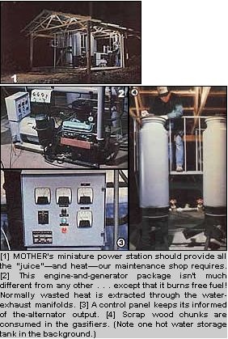
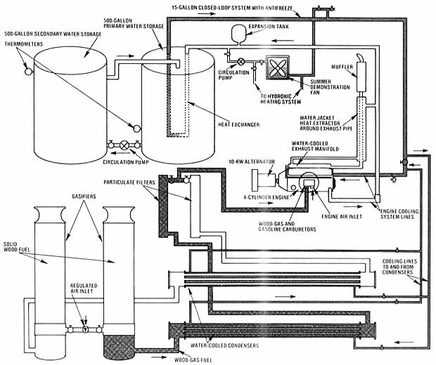

Free electricity? Free heat? Yep, you can have both with . . .
Sometimes it's difficult to decide just which is a bigger financial burden . . . the expense of operating a motor vehicle or that of providing a household with power and heat. So, in an effort to ease the strain in both cases, the folks out at MOTHER's research center have spent the past several months designing and testing various systems that use inexpensive-or sometimes even free -wood scraps as a replacement for costly fossil fuels.
In the last issue of this publication, we detailed a wood gasifier-small enough to power a car or pickup-that could be put together for about $125 in parts and materials (see MOTHER NO. 69, page 126). In that report, we also mentioned that we were in the process of adapting the technology to a stationary generating system. Well, just days before the deadline for this issue, our research crew put the finishing touches on that wood-fired powerplant. And-although we haven't yet had a chance to devote enough working hours to the unit to convince us that the design is as good as we can make it-our initial testing seems to indicate that it'll perform as well as any conventionally fueled standby generator of similar output . . . in addition to providing a sufficient amount of hot water to actually heat a home!
From the outset of this project, we not only wanted to build a working demonstration piece that would allow visitors to our Eco-Village to see-and, in some instances, later duplicate-what we had done, but also wished to set up an honest-to-goodness functional AC power source that would fully supply our maintenance shop, thereby reducing our dependence on the local utility's services.
As it turned out, we were able to accomplish our goals . . . and to do so using inexpensive scrap or junkyard parts, which we mated to the 10-kilowatt, 120/ 240-volt alternator originally purchased for the hydroelectric installation we described in MOTHER NO. 66. (Since the head and flow at our water-power site offer a potential of little more than 2 KW, we decided to replace the oversized AC generator there with a more suitable 2.5-KW alternator, thus making the larger unit available for use with the wood-gas plant.)
GASIFIERS, CONDENSERS, AND FILTERS
The electricity-from-scrap system is surprisingly straightforward. To start with, rather than using just one gasifier, we chose to utilize two -plumbed inde pendently of each other-to permit the engine to operate without interruption. (As an added benefit, this setup also allows us to clean or service one chamber while the other keeps the plant running.) And because, in a stationary mode, the wood-filled tanks aren't subject to the vibration and movement they would encounter if mounted on a vehicle, we've gone ahead and installed an electromechanical grate shaker (made from an automobile wiper motor) in each firebox, to insure that fuel residue doesn't accumulate and stop the flow of the combustible "smoke" fuel produced by the gasifiers.
When the vapor leaves the "in use" unit, it goes directly into a ten-foot-long, slightly inclined horizontal condenser . . . which [1] removes a good deal of unburnable water vapor and some residue, and [2] cools and thus densifies the fuel charge, making it more potent. This "chilling chamber" is nothing more than a series of tubes, enclosed-all but their ends-in a conduit "jacket" that's filled with water and plumbed into the cooling system of the engine.
After passing through the condenser, the concentrated gases travel into a vertical filter, which snags any remaining particulate matter in layers of woven filament and prevents potential flamebacks from reaching the rest of the system . . . by means of perforated flash traps at both its inlet and outlet. Again, both the condenser and the filter were fabricated in duplicate . . . so that there would be two separate and complete fuel-producing systems, each valved to a common feed pipe leading directly to the engine.
POWERPLANT, ALTERNATOR, AND SPEED CONTROL
Four factors were taken into consideration when we chose an engine for our plant: [1] horsepower and torque at a given RPM, [2] displacement, [3] availability, and [4] cost.
From our rough calculations, we concluded that-after efficiency losses were taken into account-the 10-KW alternator would require about 22 horsepower to operate effectively. However, because horsepower is a function of engine speed, it was important that we choose a powerplant which developed its "horses" in the mid-RPM range rather than at maximum speed, since a high-revving unit would suffer from poor fuel economy and a shortened life span. We also had to consider the fact that a woodgas-fueled engine delivers only 50 to 65% of its rated power, and that the slow-burning gas performs better with a long-stroke-rather than short-stroke-design.
Engine displacement is another important factor. Obviously, a huge V-8 would consume more "smoke" than a modest four-cylinder machine requires. And, in the interest of economy, we could see no point in using a grossly oversized engine to do the relatively small task of providing a single building with electricity and heat.
Availability and cost come into play, too. We figured it was better to utilize an inexpensive salvaged engine that came close to our needs than to buy an ideally matched-but costly- new powerplant.
Fortunately, our choice proved to be a good one. A search through the local wrecking yard turned up (for $75) a 1961 Pontiac Tempest four-cylinder engine . . . a 195-cubic-inch, long-stroke model, which is-in effect-the right half of a General Motors V-8. We fitted the block with 11:1-ratio pistons and a low-overlap camshaft, then installed a homebuilt car buretion system similar to the one on our wood-gas pickup and advanced the ig nition timing slightly. (These modifica tions were for experimental purposes the system would certainly perform quite adequately with a "box stock" en gine.) We also replaced the convention al exhaust manifold with a water-cooled marine unit, and built a water jacket around the exposed exhaust pipe in order to extract waste heat to use in a thermal storage system.
As the engine stands now, it produces more than enough power at optimal generator speed-which is 1,800 RPM-to do its job effectively. As near as we can figure, the stout little fourbanger, originally rated at 110 HP at 3,800 RPM, kicks out nearly 70 "ponies" on its woodgas diet at that speed . . . which translates to a supply of about 30 usable horsepower to the alternator at 1,800 revolutions per minute (and that also happens to be the speed at which the powerplant develops its maximum torque). Furthermore, these circumstances allow us to utilize a cost-saving direct-drive coupling, rather than a more complicated and power-sapping step-down transmission system for the setup.
The generating unit itself is a standard Kamag 14 self-exciting alternator with a 10-KW continuous rating. It provides either one 240volt or two 120-volt 60-cycle circuits, and is designed to cut in at 210 volts so the plant can come up to operational speed without the burden of a load. By the same token, it incorporates an overspeed governor that cuts the unit out at a voltage of 270.
Because changing load demands directly affect the rotational speed of the engine/alternator setup, and thereby influence power cycling, we had to rely on a speed control to maintain 60 cycles consistently. But rather than use the variable-width pulley arrangement that originally came with the generator, we utilized its speed sensor and servomotor only, then connected the latter component directly to the engine throttle. This layout is far less cumbersome and complicated than the "pulley pincher", though we'll need to do a good deal more testing-and possibly make some modifications-before we can fully vouch for its effectiveness.
COGENERATION PROVIDES HEAT
In addition to producing electricity for our maintenance shop, the system has also been designed to provide that structure with heat. Believe it or not, only about one-third of the energy in a given fuel does any useful work as it's burned in an engine . . . the rest is generally wasted-in the form of heat-as it's dumped out the exhaust pipe or drawn from the radiator. So, to take advantage of this squandered resource, we routed the powerplant's cooling system-along with the "jacket" that surrounds its ex haust manifold-into a 15-gallon "closed loop" . . . which in turn dumps its thermal energy into a 500-gallon storage tank that's connected, through a pump and 1-1/2" line, to a second container of equal volume.
For our summertime demonstrations, we've plumbed a small hot-water space heater into the primary loop from the engine. However, come fall we plan to expand this into a fullscale hydronic system, by installing baseboard heaters in the 1,200-square-foot structure . . . which should make full use of the 170°F water that the engine provides.
AND THERE'S MORE!
Our experimentation won't end there, either. As soon as we're totally satisfied with the electricity-producing portion of our setup, we're going to bolt an air compressor onto the accessory bracket at the front of the engine, strap a belt around it, and run a pneumatic line into a buried air storage tank next to the shop. The cool earth will help to condense any moisture . . . and the pressurized "atmosphere" can then be used to drive tools or spray paint.
Actually, we're limited only by our imaginations when it comes to thinking up new tasks for our generator to perform. There seems to be enough surplus power in the engine to allow us to operate even an automotive air conditioning compressor, which should be capable of cooling a small house . . . and at least one member of our research staff feels that it's possible to develop a wood-chipper/auger-feed mechanism-driven by the engine crankshaft-that could convert large pieces of wood into "bite-size" chunks and feed them into the gasifying chambers!
At any rate, we feel that we've made a number of noteworthy discoveries in the course of our small-scale research, not the least of which is the fact that a home's electrical needs can be supplied by wood gasification. The tab on MOM's Lilliputian utility-not counting labor-came to approximately $6,000, including its "housing", which consists of a slab and a protective roof. Of course, this cost could be reduced substantially if a used alternator and an unmodified engine were utilized. And it doesn't take a very sharp pencil to figure out that a household or farmstead that eats up perhaps $1,500 annually in purchased energy (in many areas that would be considered a modest figure) would have to operate with a selfcontained system for only four years-provided the fuel is scrap-to pay off the investment.
But we're not, by any means, finished yet. Keep an eye on future issues for more reports about our cogeneration system, because we'll be keeping you informed of our progress as we go along.
|
 |
 |
|